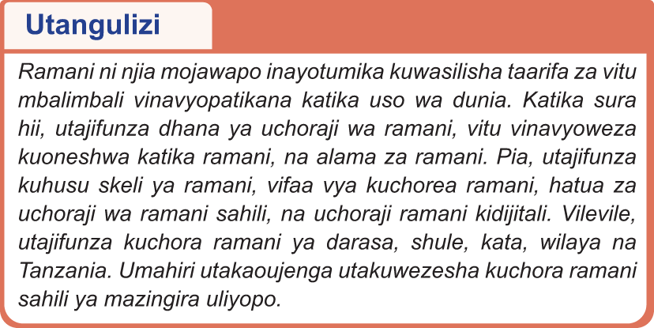

Fikiri
Vitu vilivyopo katika uso wa dunia vinavyoweza kuwakilishwa katika ramani
Dhana ya uchoraji wa ramani
Uchoraji wa ramani ni sanaa na sayansi ya kuwasilisha kwenye karatasi au uso bapa wowote mahali ambapo vitu vinapatikana katika uso wa dunia. Taaluma ya uchoraji wa ramani huitwa katografia, na mtu anayechora ramani huitwa katografa. Katika uchoraji wa ramani, tunatumia alama kuwasilisha vitu kama vile: barabara, nyumba, mito na milima. Uchoraji huu husingatia uwiano sahihi kati ya eneo, vitu halisi na alama zitakazowekwa katika ramani.
Vitu vinavyoweza kuwasilishwa katika ramani
Ramani hutumika kuwasilisha vitu mbalimbali kulingana na dhumuni